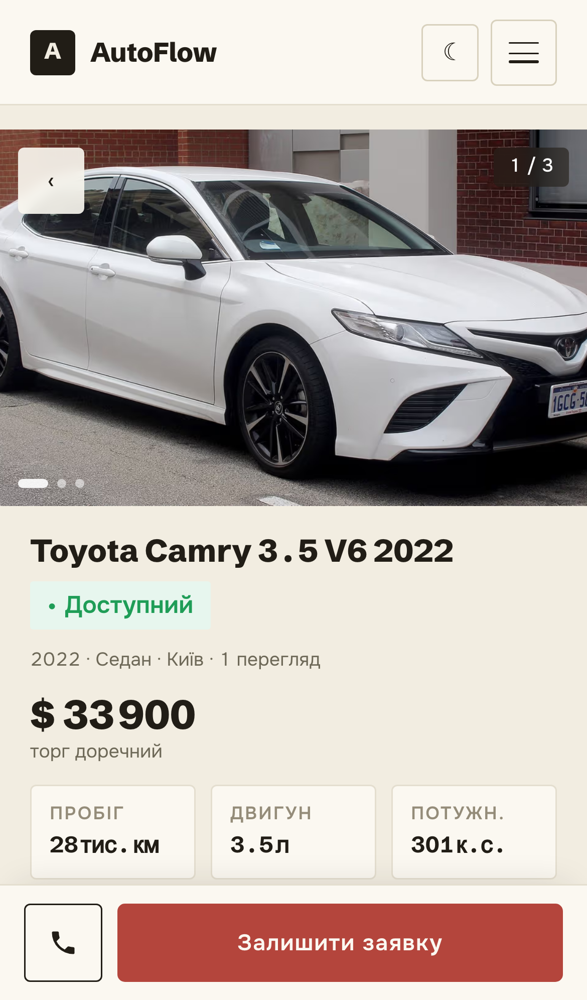

Toyota Camry
3.5 V6 · 2022
3.5 V6 · 2022
$ 33 900
28 тис. км · 3.5 л · Київ
Переглянути авто ↗
Опубліковано
Одне авто проходить увесь шлях: оголошення → сайт → Telegram → заявка менеджеру. Шість ключових кадрів для погодження композиції.

01 — вихідне фото замість картки. 02 і 03 — без змін. 04 — iPhone із постом Telegram. 05 — iPhone менеджера з отриманою заявкою, без форми й фото. 06 — лише AutoFlow, думка та CTA. Таймінг 30 секунд збережено; звуку, руху й виробництва немає. Статичні кадри v2 погоджені; анімоване прев’ю очікує погодження.
Так, из того, что я вижу, у нас, во-первых, шесть, типа, одинаковых картинок на каждом слайде, и это очень плохо. Давай подумаем. Может, типа... Окей, у вас есть авто, где просто, типа, фотка машины. Одне оголошення так и остаётся, только давай... так и остаётся, хорошо. На вашем сайте тоже неплохо. И у вашем телеграм-канале тут нужен iPhone с UI-кой Телеграма и что там запаблишена машина. Заявка у сразу менеджеру. Ну, тоже нормально, но нарисовать бы это как-то понятнее. Вот. Меньше рутины — больше уваги клиентам. Окей.Telegram на кадрах 04–05 є ескізом; реальні захоплення потрібні до виробництва. Фото й UI сайту — з наявного локального скриншота; нових матеріалів не генерували.